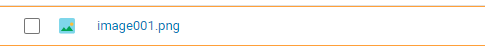
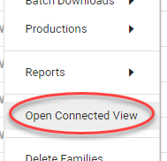

Alt + click on a document in the Document List
Opens the document in a (new) connected tab.
|
|
Note: If there is already a connected window, the document will be opened there. Disconnect/close the connected window to open a new connected tab. |

Shift + Alt + click on a document in the Document List
Opens the document in a (new) connected window.
|
|
Note: If there is already a connected tab, the document will be opened there. Disconnect/close the connected tab to open a new connected window. |
Select Open Connected View via the Settings icon  .
.
Opens a document from the Document List (with orange borders) in a new connected tab.

